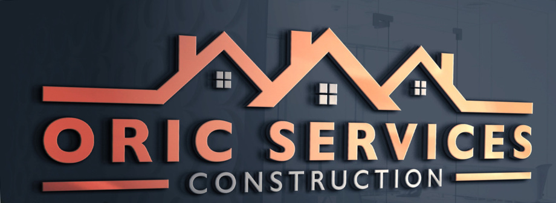

Oric Services
Oric services is a reliable and friendly Installations company working with Homeowners, Landlords and Businesses across the Northwest. With our experienced team we willingly take on jobs of all sizes and descriptions.